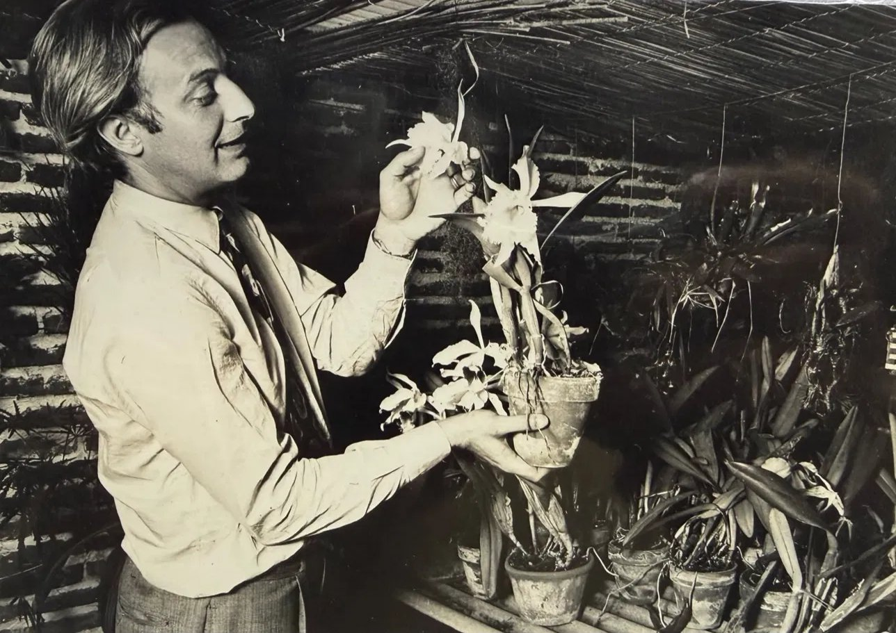

Un proyecto de barrio, hecho a mano.

Mi abuelo Toto era fanático de las plantas, y sobre todo de las orquídeas. Llegó a cultivar miles, de todo tipo y tamaño, y hasta creó sus propios híbridos cruzándolas él mismo. De ahí viene esto.
Plantín arrancó con una pregunta simple: ¿por qué para comprar una planta hay que recorrer cinco viveros o revolver Instagram, si cada uno ya tiene su catálogo? La idea es juntar lo que cada vivero ya vende en un solo lugar, prolijo y fácil de buscar, y que la venta siga siendo como siempre: entre el vivero y su cliente, por WhatsApp.
No somos una tienda, ni un delivery, ni una app con inversores. Somos un directorio que se arma vivero por vivero, en persona, mirando el local y las plantas. Estamos empezando por CABA y Zona Norte: si tenés un vivero y te interesa, dejanos tus datos acá al lado y te vamos a visitar.
Contanos quién sos y te vamos a ver.
Sin costo para arrancar y sin comisión sobre ventas. Vos ponés las plantas, nosotros armamos la ficha.
Lo que nos importa
Viveros de barrio
Juntamos a los viveros de siempre, los que conocen cada planta. No depósitos ni revendedores.
Sin comisión
El vivero pone sus precios y se queda con todo lo que vende por acá.
Trato directo
Le escribís al vivero por WhatsApp y coordinás con ellos. El cliente es suyo.
Aprender de plantas
Como hacía Toto: mirarlas, entenderlas y compartirlas. Por eso armamos el árbol →